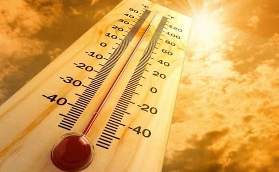
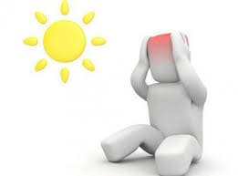
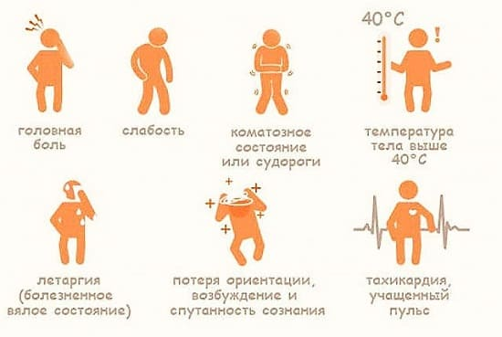
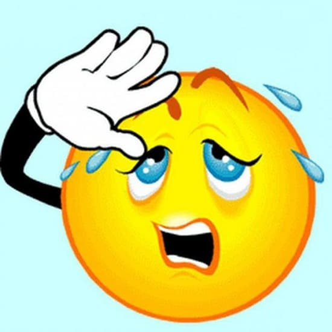
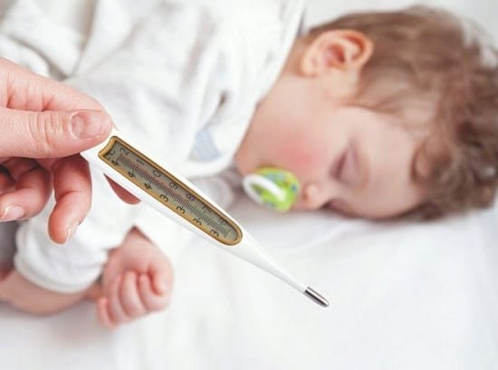
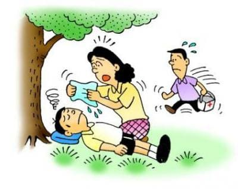
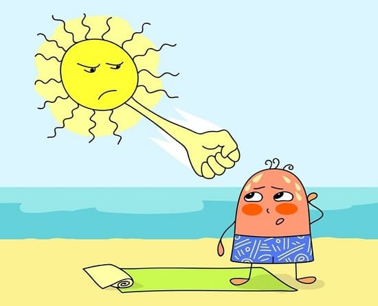

Существуют три возможные проблемы, с которыми дети и подростки могут столкнуться в жаркую погоду: судороги при перенапряжении мышц в условиях перегрева, тепловое истощение или тепловой удар. Ниже дано краткое описание всех трех и советы, как их предотвратить.
ТЕПЛОВЫЕ СУДОРОГИ
Тепловые судороги, которые представляют собой сильные и болезненные сокращения групп мышц, часто встречаются у детей и подростков, когда они занимаются спортом в жаркую погоду. Тепловые судороги могут поразить любую группу мышц, тем не менее общепризнано, что в большей степени им подвержены икроножные мышцы и мышцы подколенного сухожилия. Тепловые судороги вызываются, как правило, жарой, обезвоживанием, сильным изнурением, и их вероятность очень высока, если спортсмен находится в плохой физической форме.

ЛЕЧЕНИЕ
Спортсмена, страдающего от тепловых судорог, очень легко вычислить. Они обычно лежат на поле, держась за свои икры, и не могут встать или пошевелиться. Хорошо то, что тепловые судороги легко лечатся. Они обычно проходят после отдыха. Это очень важно, так как недостаточный отдых перед возвращением к активной деятельности может привести к дальнейшим повреждениям мышц, таким как растяжение или разрывы.

СОВЕТ ДОКТОРОВ СИРС: ПРАВИЛЬНО «КОРМИТЕ» АКТИВНЫЕ МЫШЦЫ Научите своих маленьких спортсменов правильному приему жидкости. Помимо большого количества воды, они должны употреблять продукты, богатые калием, который очень важен для функционирования мышц. Недостаток калия может сделать человека более подверженным тепловым судорогам. Калий содержится в таких продуктах, как бананы и листовые зеленые овощи. |
Ребенок должен полностью отдохнуть, если у него были тепловые судороги, и может возвратиться к физической деятельности только после того, как судорог не было в течение некоторого времени. Другими важными методами лечения тепловых судорог являются:
ТЕПЛОВОЕ ИСТОЩЕНИЕ
Как и тепловые судороги, тепловое истощение является результатом перегрева. Тепловое истощение часто развивается при интенсивной физической деятельности, причем иногда для этого достаточно только обезвоживания. Дети старшего возраста и пожилые люди больше подвержены риску теплового истощения, так как этим возрастным группам сложнее всего регулировать свою внутреннюю температуру тела.

СИМПТОМЫ
Признаками, указывающими на то, что у вашего ребенка или подростка тепловое истощение, являются:
СОВЕТ ДОКТОРОВ СИРС: ТОЧНОЕ ИЗМЕРЕНИЕ ТЕМПЕРАТУРЫ Если вы подозреваете заболевание, вызванное жарой, ОЧЕНЬ ВАЖНО правильно измерить температуру ребенка. Вы должны использовать только оральный или ректальный термометр. Не используйте ушной или налобный термометр, так как они могут показать ошибочно низкую температуру. |
ЛЕЧЕНИЕ
Примите следующие меры:
КОГДА БЕСПОКОИТЬСЯ
Немедленно обращайтесь к врачу, если у вашего ребенка наблюдаются какие-либо из этих симптомов:
При правильном лечении дети и подростки полностью выздоравливают после теплового истощения без каких-либо последствий.

ТЕПЛОВОЙ УДАР
Тепловой удар — самое серьезное состояние, вызванное жарой, и требует скорой медицинской помощи. Тепловой удар чаще всего развивается у тех, кто выполняет тяжелые физические упражнения в очень жаркую или влажную погоду. Тем не менее он может случиться у людей, которые просто находятся в достаточно жарких и влажных условиях — обычно это происходит с очень молодыми или очень пожилыми и болезненными людьми. Этим возрастным категориям сложнее всего регулировать температуру тела. Тепловой удар у детей и подростков чаще всего наблюдается при интенсивной физической нагрузке в самое жаркое и влажное время года.
СИМПТОМЫ
У человека, получившего тепловой удар, обычно наблюдаются следующие симптомы:
Если у вашего ребенка наблюдается хоть один из этих симптомов, немедленно вызывайте «Скорую помощь».

ЛЕЧЕНИЕ
Вызвав «Скорую», снижайте температуру тела и возмещайте недостаток жидкости в организме. По возможности ребенка следует уложить в прохладном месте. Пока вы ждете прибытия работников «Скорой помощи», используйте пакеты со льдом для охлаждения тела. Если под рукой есть прохладная вода, погрузите тело в нее, насколько это возможно. После того как температура тела понизилась и ребенок начал поправляться от теплового удара, его обычно некоторое время наблюдают в больнице, чтобы не пропустить какие-либо признаки дальнейших проблем.
ПРОФИЛАКТИКА ЗАБОЛЕВАНИЙ ВЫЗВАННЫХ ЖАРОЙ
Хорошая новость в том, что все вышеописанные заболевания могут быть предотвращены, если принимать необходимые меры. Вот несколько простых способов:

СОВЕТ ДОКТОРОВ СИРС: СПОРТИВНЫЕ НАПИТКИ - ПОЛЕЗНО ИЛИ ВРЕДНО? Существует огромный выбор спортивных напитков, предназначенных для юных спортсменов. Меня часто спрашивают: «Что лучше — спортивный напиток или вода?» Выбор между водой и спортивными напитками зависит от интенсивности нагрузки, температуры воздуха, его влажности и продолжительности тренировки. При небольших или умеренных нагрузках воды, как правило, бывает достаточно. Некоторым спортсменам, например, регбистам или тем, которые интенсивно тренируются в очень жарких и влажных условиях, может быть полезно восстановление с помощью спортивных напитков, содержащих электролиты. Спортивные напитки обычно не нужны спортсменам, тренировки которых имеют низкую интенсивность. Подслащенные спортивные напитки не должны употребляться в то время, когда ребенок не тренируется, или в качестве заменителя воды. |
Здоровье ребенка от докторов Сирс / Сирс У. и др.